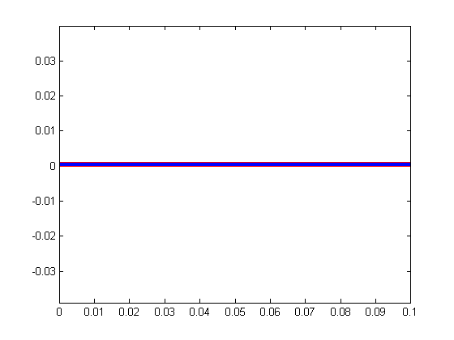

Contents
function [] = beam()
%[uxy,vxy,phixy] = piezoExample; import pdetbplus.*;
function [equations,variables] = elasticitySymbolicFunction()
PDE input, define eq and input;
Reserved keywords: ddx,ddy,d[variable]dx,d[variable]dy specify the Div Grad operator "grad." as ddx*, ddy*
syms ddx ddy real; % user input begins syms E nu real; syms u v dudx dudy dvdx dvdy real; % material constants G = E/(1-nu^2); C11 = G; C12 = G*nu; C22 = G; C33 = G*(1-nu)/2; % deformation gradient F = sym(eye(2)) + [dudx dudy;dvdx dvdy]; % Green-Lagrange strain tensor strainTensor = 1/2*expand(F.'*F - sym(eye(2))); ex = strainTensor(1,1); ey = strainTensor(2,2); gxy = 2*strainTensor(1,2); % same as 2*E(2,1); "2" for engineering strain Sx = C11*ex + C12*ey; Sy = C12*ex + C22*ey; Txy = C33*gxy; equations = [ddx ddy]*[Sx Txy; Txy Sy] - [1 0]; display Problem_Equations; pretty(equations'); % plug in values equations = subs(equations,{E,nu},[2e9,0.29]); display Equations_with_values pretty(equations'); variables = [u v];
Error using assignin
Attempt to add "ddx" to a static workspace.
See <a href="matlab: helpview([docroot '/techdoc/matlab_prog/matlab_prog.map'],'adding_variables_dynamically')">MATLAB Programming, Restrictions on Assigning to Variables</a> for details.
Error in syms (line 64)
assignin('caller',x,sym(x,control));
Error in beam/elasticitySymbolicFunction (line 9)
syms ddx ddy real;
Error in pdetbplus.coeffsObject/addCoeff (line 108)
[equations,variables] = self.coeff{end}.symbolicEquationFunction();
Error in beam (line 90)
coeff = coeff.addCoeff('region','beamMaterial','symbolicEquationFunction',@elasticitySymbolicFunction);
end
geometry
L = 100e-3;
H = 1e-3;
p{1} = pointObject(0,0);
p{2} = p{1} + [0,H];
p{3} = p{2} + [L,0];
p{4} = p{3} - [0,H];
a{1} = lineObject('wall',p{1},p{2});
a{2} = lineObject('top',p{2},p{3});
a{3} = lineObject('free',p{3},p{4});
a{4} = lineObject('bottom',p{4},p{1});
for kk=1:length(a)
a{kk}.leftRegion = 'nonMeshedSpace';
a{kk}.rightRegion = 'beamMaterial';
end
beam = geometryObject('beam',a);
beam.exteriorRegion = 'nonMeshedSpace';
beam.plot();
beam = beam.initMesh('showMesh',true,'Hmax',H/5); axis('equal');
warning: Approximately 5000 triangles will be generated.
boundary conditions
N = 2; % output dimension stepNumber = 1; numDeflectionSteps = 3; % instantiate boundaryConditionObject for convenient definition of BCs bc = boundaryConditionObject(beam, N); function [hval,rval,qval,gval] = bcondWall(x,y,u,t) % Dirichlet condition on the boundary rval = zeros(N,1); hval = speye(N); qval = sparse(N,N); gval = sparse(N,1); end function [hval,rval,qval,gval] = bcondFree(x,y,u,t) rval = zeros(N,1); hval = sparse(N,N); qval = sparse(N,N); gval(1) = 0; gval(2) = stepNumber/numDeflectionSteps*5/H; end for k=1:length(a) if strfind(a{k}.name,'wall') bc = bc.addBC('name',a{k}.name,'xyutFunction',@bcondWall); elseif strfind(a{k}.name,'free') bc = bc.addBC('name',a{k}.name,'xyutFunction',@bcondFree); end end
coefficients
coeff = coeffsObject(beam, N); coeff = coeff.addCoeff('region','beamMaterial','symbolicEquationFunction',@elasticitySymbolicFunction);
solve
a = 0; % magnetostatic problem numNodes = size(beam.mesh.p,2); freeNodes = beam.getBoundaryNodes('name','free'); [~,topRightCornerIndex] = max(beam.mesh.p(2,freeNodes)); usePdenonlin = true; if usePdenonlin u = zeros(N*numNodes,1); %initial guess for stepNumber=1:numDeflectionSteps %u=pdenonlin(@bc.bcFunction,beam.mesh.p,beam.mesh.e,beam.mesh.t,@coeff.cFunction,a,[0 0]','Report','on','Jacobian','full','U0',u); u=assempde(@bc.bcFunction,beam.mesh.p,beam.mesh.e,beam.mesh.t,@coeff.cFunction,a,[0 0]'); end uu = reshape(u,numNodes,[]); beam.mesh.p(1:2,:) = beam.mesh.p(1:2,:) + uu(:,1:2)'; else % add additional constraints Hadd = sparse(0,0); Radd = []; uoGeometry = beam.mesh.p(1:2,:)'; uoGeometry = uoGeometry(:); [~,~,Hmat,R] = bc.getMatrices('solution',zeros(N*numNodes,1)); if isempty(find(Hmat ~= 0)) R = []; end % initial guess sizeH = size(R,1) + size(Radd,1); uoPDE = zeros(N*numNodes+sizeH,1); uoPDE(1:2*numNodes,1) = uoGeometry; uinitialPDE = zeros(N*numNodes+sizeH,1); uinitialPDE(1:N*numNodes,1) = uoPDE(1:N*numNodes); for stepNumber=1:numDeflectionSteps xyphi = solveGeomNonlinear(uinitialPDE,uoPDE,coeff,bc,false,Hadd,Radd); % a basic nonlinear solver uinitialPDE = xyphi; xyphi = xyphi(1:N*numNodes); xyphi = reshape(xyphi,numNodes,[]); beam.mesh.p(1:2,:) = xyphi(:,1:2)'; fprintf('Tip Y coordinate is %e\n',beam.mesh.p(2,freeNodes(topRightCornerIndex))); end end figure(1);beam.plot('showMesh',true);axis equal; fprintf('Tip Y coordinate is %e\n',beam.mesh.p(2,freeNodes(topRightCornerIndex)));
end